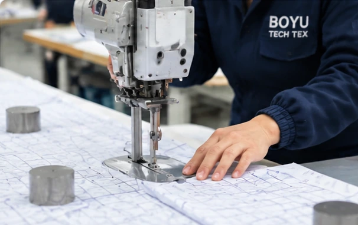
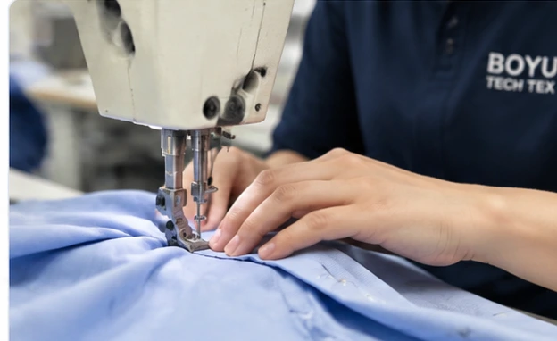
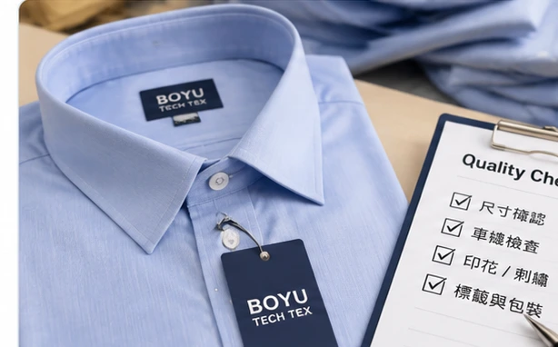

01 / BOYU
裁剪作業Fabric Cutting
依布料特性與版型需求進行裁剪，重視尺寸、方向與工序細節。Cut fabric according to garment patterns, dimensions and material requirements.
BOYU TECH TEX 結合台灣製作夥伴的專業經驗，從版型評估、打樣調整、裁剪縫製到成品檢查，重視每一道影響服裝品質的關鍵環節。Working with experienced manufacturing partners in Taiwan, BOYU TECH TEX focuses on fit, sampling, garment construction and quality coordination.
洽詢專案需求Discuss Your Project探索布料系列Explore Fabrics下方三張為工序情境示意圖，非實際工廠照片；上方影片為 BOYU 提供的實景紀錄。The three images below are illustrative; the video above is actual BOYU-supplied factory footage.

依布料特性與版型需求進行裁剪，重視尺寸、方向與工序細節。Cut fabric according to garment patterns, dimensions and material requirements.

從車線、接縫到收邊，關注成衣結構與穿著品質。Focus on seams, stitching, finishing and garment construction.

依產品條件評估刺繡、印花、標籤與其他品牌識別細節。Explore embroidery, prints, labels and other brand details.
依款式、材料與工序規劃適合的製作流程。Coordinate workflows according to design and material requirements.
依專案要求確認尺寸、外觀與製作細節。Review measurements, appearance and workmanship against project requirements.
分享需求、用途、預估數量與預算，BOYU 將協助評估適合的方向。Share your application, quantity and budget to discuss a suitable approach.
透過 LINE 聯繫Contact via LINE前往網站詢價Go to Inquiry